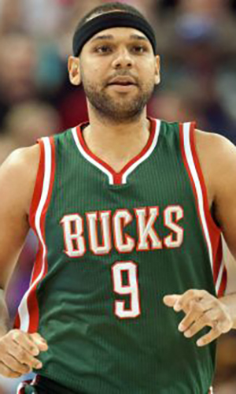

|  |
Матчи |
72 |
|
Передачи (всего/среднее) |
130 |
1.8 |
| В основе |
22 |
|
Подборы в защите (всего/среднее) |
175 |
2.4 |
| Время (всего/среднее) |
1716:47 |
23:51 |
Подборы в атаке (всего/среднее) |
45 |
0.6 |
| Очки (всего/среднее) |
518 |
7.2 |
Подборы (всего/среднее) |
220 |
3.1 |
| 2-очковые броски (всего/среднее) |
124/231 |
1.7/3.2 |
Перехваты (всего/среднее) |
72 |
1 |
| 2-очковые броски (% реализации) |
53.7% |
|
Потери (всего/среднее) |
63 |
0.9 |
| 3-очковые броски (всего/среднее) |
74/192 |
1/2.7 |
Блокшоты (всего/среднее) |
11 |
0.2 |
| 3-очковые броски (% реализации) |
38.5% |
|
Блокшоты соперника (всего/среднее) |
16 |
0.2 |
| Штрафные броски (всего/среднее) |
48/67 |
0.7/0.9 |
Фолы (всего/среднее) |
114 |
1.6 |
| Джаред Дадли |
Штрафные броски (% реализации) |
71.6% |
|
Коэффициент полезности (всего/среднее) |
514 |
7.1 |